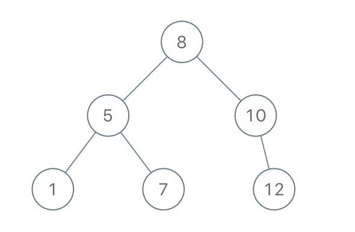

1008. 前序遍历构造二叉搜索树
按 preorder 顺序消费，递归带区间 (lo, hi)：下一个值在区间内就建结点，越界就返回空——O(n)。
思路
- 全局
idx只前进不回退：build(lo, hi)消费「值落在 (lo, hi) 的前缀」，正好是这棵子树的结点。 - 建根后把区间劈成两半：左子树
(lo, 根值)、右子树(根值, hi)。 - 下一个值不在区间内就返回空，idx 不动，留给上层的另一个分支用——这是 O(n) 的关键。
图解
最优解
1class Solution {2 private int idx;3 4 public TreeNode bstFromPreorder(int[] preorder) {5 idx = 0;6 return build(preorder, Integer.MIN_VALUE, Integer.MAX_VALUE);7 }8 9 // preorder[idx..] 里值落在 (lo, hi) 的前缀正好构成这棵子树；读到越界值就停10 private TreeNode build(int[] preorder, int lo, int hi) {11 if (idx == preorder.length || preorder[idx] < lo || preorder[idx] > hi) return null;12 TreeNode root = new TreeNode(preorder[idx++]);13 root.left = build(preorder, lo, root.val);14 root.right = build(preorder, root.val, hi);15 return root;16 }17}题目
给定一个整数数组，它表示BST(即 二叉搜索树 )的 先序遍历 ，构造树并返回其根。
保证 对于给定的测试用例，总是有可能找到具有给定需求的二叉搜索树。
二叉搜索树 是一棵二叉树，其中每个节点， Node.left 的任何后代的值 严格小于 Node.val , Node.right 的任何后代的值 严格大于 Node.val。
二叉树的 前序遍历 首先显示节点的值，然后遍历Node.left，最后遍历Node.right。
示例 1：

输入：preorder = [8,5,1,7,10,12] 输出：[8,5,10,1,7,null,12]
示例 2:
输入: preorder = [1,3] 输出: [1,null,3]
提示：
1 <= preorder.length <= 1001 <= preorder[i] <= 10^8preorder中的值 互不相同
题面取自力扣当前版本。
数据快照 2026-11-04。题面版权归力扣所有，本站点仅供本人学习使用，请勿对外发布。